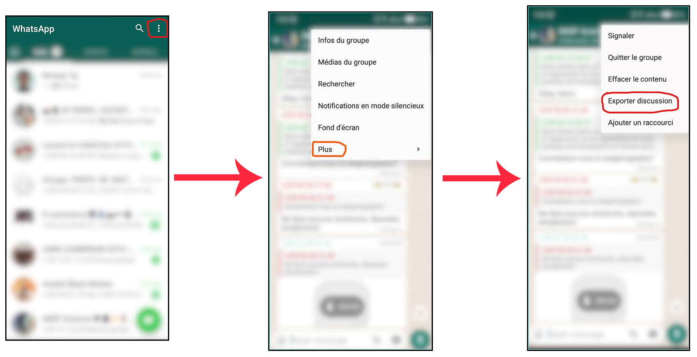

Récupération et importation des données
WhatsApp dispose d’une fonction intégrée pour l’exportation de discussions. Il suffit d’entrer dans n’importe quel discussion que vous désirez analyser. Les conversations de groupe sont particulièrement intéressantes. Dans le cas où vous ne saviez pas comment exporter les données Whatsapp, suivez les étapes suivantes:
- Rentrez dans une discussion, appuyez sur les trois points dans le coin supérieur droit.
- Sélectionnez l’option Plus.
- Sélectionnez l’option Export discussion

chat <- rwa_read("Imspdata.txt", verbose = TRUE) %>%
filter(!is.na(author)) %>%
select(-source)
Puisque certains membres du groupe ne sont pas dans notre répertoire, à la place de leur nom, nous avons leur numéro de téléphone, ainsi pour garder l’anonymat des membres du groupe, nous avons opéré un Changement des noms pour tous les membres.
levels(chat$author) <- paste("member", 1:length(unique(chat$author)), sep = "_")
Visualisation et analyse des données
Visualisation de la fréquence quotidienne des messages.
Notre première visualisation concerne la fréquence des messages par jour dans le groupe sur les différentes saisons.
# Palette de couleurs
paleta.saison <- brewer.pal(7,"Dark2")
myChat %>%
group_by(saison) %>%
count(day) %>%
ggplot(aes(x = day, y = n, fill=saison)) +
geom_bar(stat = "identity") +
scale_fill_manual(values=paleta.saison) +
ylab("Nombre de messages") + xlab("Date") +
labs(title = "Nombre de messages par jour",
subtitle = "Fréquence par saison") +
theme_minimal() +
theme( legend.title = element_blank(),
legend.position = "bottom",
plot.title = element_text(hjust = 0.5, size = 20),
plot.subtitle = element_text(hjust = 0.5))

D’une façon générale, le groupe est toujours animé avec une faible animation en Été et Automne 2020. On dirait qu’un évènement s’est produit vers la fin de l’hiver 2019 et début Printemps 2020, caractérisée par une forte conversation.
Message par jour de la semaine.
Voyons la fréquence quotidienne des messages. Nous pouvons voir les jours de la semaines où il y a eu plus de discussion dans les saisons.
myChat %>%
mutate( num_jsem = wday(day),
nom_jsem = weekdays(day)) %>%
group_by(saison, num_jsem, nom_jsem) %>%
count() %>%
ggplot(aes(x = reorder(nom_jsem, -num_jsem), y = n, fill = saison)) +
geom_bar(stat = "identity") +
scale_fill_manual(values = paleta.saison) +
ylab("") + xlab("") +
coord_flip() +
labs(title = "Nombre de messages par jour de la semaine",
subtitle = "Fréquence selon les saisons de l'année") +
theme_minimal() +
theme( legend.title = element_blank(),
legend.position = "bottom",
plot.title = element_text(hjust = 0.5, size = 20),
plot.subtitle = element_text(hjust = 0.5))
 Il y a eu beaucoup de discussions les mardis surtout en printemps 2020 et Automne 2019. On notera aussi les lundis qui sont caractérisés aussi par une forte discussion principalement en Hiver 2019.
Il y a eu beaucoup de discussions les mardis surtout en printemps 2020 et Automne 2019. On notera aussi les lundis qui sont caractérisés aussi par une forte discussion principalement en Hiver 2019.
Message par heure et par jour
On peut se poser la questions de savoir quelles sont les heures auxquelles il y a eu plus de discussions ?
jours_semaine <- c("dimanche", "lundi", "mardi", "mercredi", "jeudi", "vendredi", "samedi" )
names(jours_semaine) <- 1:7
myChat %>%
mutate( heure = hour(time),
num_jsem = wday(day),
nom_jsem = weekdays(day)) %>%
count(saison, num_jsem, nom_jsem, heure) %>%
ggplot(aes(x = heure, y = n, fill = saison)) +
geom_bar(stat = "identity") +
scale_fill_manual(values = paleta.saison) +
ylab("Nombre de messages") + xlab("Horaire") +
labs(title = "Nombre de messages par heure de la journée",
subtitle = "Fréquence selon les saisons de l'année") +
facet_wrap(~num_jsem, ncol=7, labeller = labeller(num_jsem = jours_semaine)) +
theme_minimal() +
theme( legend.title = element_blank(),
legend.position = "bottom",
panel.spacing.x = unit(0.0, "lines"),
axis.text.x = element_text(size = 5),
plot.title = element_text(hjust = 0.5, size = 20),
plot.subtitle = element_text(hjust = 0.5))
 La plus part des discussions ont eu lieu entre 14h à 21h les dimanches, lundis et mardis, entre 9h et 20 les autres jours.
La plus part des discussions ont eu lieu entre 14h à 21h les dimanches, lundis et mardis, entre 9h et 20 les autres jours.
Qui a envoyé le plus de messages?
Voyons voir lesquels de nos utilisateurs ont montré une plus grande intention d’échange, en fonction du nombre de messages envoyés.
myChat %>%
mutate(day = date(time)) %>%
group_by(saison)%>%
count(author) %>%
slice_max(n, prop = 0.1) %>%
ggplot(aes(x = reorder(author, n), y = n, fill=saison)) +
geom_bar(stat = "identity") +
scale_fill_manual(values=paleta.saison) +
ylab("Nombre total de messages") + xlab("Utilisateurs") +
coord_flip() +
labs(title = "Nombre total de messages par utilisateur",
subtitle = "Qui est le plus communicatif ? Fréquence par saison") +
theme_minimal() +
theme( legend.title = element_blank(),
legend.position = "bottom",
plot.title = element_text(hjust = 0.5, size = 20),
plot.subtitle = element_text(hjust = 0.5))

On voit clairement que l’utilisateur etiqueté member_13 a largement envoyé de plus de message que les autres.
Quels sont les emojis les plus utilisés dans le chat?
Emojis sont des symboles graphiques Unicode, qui sont actuellement utilisés comme abréviation pour exprimer des concepts et des idées, il ya des centaines d’emojis et le package rwhatsapp nous permet d’explorer la popularité dans les échanges de messages de toute sorte de conversation.
plotEmojis <- myChat %>%
unnest(c(emoji, emoji_name)) %>%
mutate(emoji = str_sub(emoji, end = 1)) %>%
count(emoji, emoji_name) %>%
top_n(20, n) %>%
arrange(desc(n)) %>%
mutate( emoji_url = map_chr(emoji,
~paste0("https://abs.twimg.com/emoji/v2/72x72/",
as.hexmode(utf8ToInt(.x)),".png")))
# graphe des emojis les plus utilisés
plotEmojis %>%
ggplot(aes(x = reorder(emoji_name, n), y = n)) +
geom_col(aes(fill = n), show.legend = FALSE, width = .2) +
geom_point(aes(color = n), show.legend = FALSE, size = 3) +
geom_image(aes(image = emoji_url), size = .045) +
scale_fill_gradient(low = "blue",high = "red") +
scale_color_gradient(low = "#2b83ba",high = "#d7191c") +
ylab("Nombre de fois où l'emoji a été utilisé") +
xlab("Emoji et signification") +
labs(title = "Emojis les plus généralement utilisés",
subtitle = "Emojis les plus utilisés par tous") +
coord_flip() +
theme_minimal() +
theme( legend.title = element_blank(),
legend.position = "bottom",
plot.title = element_text(hjust = 0.5, size = 20),
plot.subtitle = element_text(hjust = 0.5))

Nous avons les 20 emojis les plus utilisés dans le groupe. Aujourd’hui, un emoji dit plus de mots. On conclura que nous avons un groupe whatsapp géneralement en gaiété.
Emojis les plus utilisés dans les chats par utilisateur
Ici, nous voulons détecter les utilisateurs qui utilisent plus d’Emojis. Afin de rendre le graphique un peu plus clair, nous avons considéré les utilisateurs qui ont un nombre de message supérieur à la moyenne et leur 10 premiers emojis utilisés.
plotEmojis <- myChat %>%
group_by(author) %>%
mutate(nb = n()) %>%
ungroup() %>%
filter(nb >= (mean(nb))) %>%
unnest(c(emoji, emoji_name)) %>%
mutate( emoji = str_sub(emoji, end = 1)) %>%
count(author, emoji, emoji_name, sort = TRUE) %>%
group_by(author) %>%
top_n(n = 10, n) %>%
slice(1:10) %>%
mutate( emoji_url = map_chr(emoji,
~paste0("https://abs.twimg.com/emoji/v2/72x72/",
as.hexmode(utf8ToInt(.x)),".png")) )
plotEmojis %>%
ggplot(aes(x = reorder(emoji, -n), y = n)) +
geom_col(aes(fill = author, group = author), show.legend = FALSE, width = .20) +
geom_image(aes(image = emoji_url), size=.10) +
ylab("Nombre de fois où l'emoji a été utilisé") +
xlab("Emoji") +
facet_wrap(~author, ncol = 5, scales = "free") +
ggtitle("Emojis les plus utilisés dans la conversation, par utilisateur") +
theme_minimal() +
theme( legend.title = element_blank(),
legend.position = "bottom",
axis.text.x=element_blank(),
plot.title = element_text(hjust = 0.5, size = 15),
plot.subtitle = element_text(hjust = 0.5))

On a donc 9 utilisateurs qui ont un nombre de discussions supérieur à la moyenne et ils prennent beaucoup de plaisir à écrire.
les mots les plus utilisés dans les discussions
Comme précédemment sur les Emojis, il est possible de faire une analyse sur la fréquence des mots les plus utilisés dans le groupe Whatsapp et par les membres du groupe. Pour rendre l’analyse plus simple, on utilisons le pakcage tidytext connu pour l’exploration des données textes. Avant de passer à la classification des mots, nous avons jugé bon de retirer les mots qui n’ont pas de signification pertinente, tels que les articles, si, bien, etc
remover_word <- c(stopwords(language = "fr"), "a", "c'est", "cas", "1", "2",
"3", "4", "5", "comme","où", "car", "https", "the", "fait",
"dit", "très", "quelque chose", "parce que", "je pense",
"était","eux", "très", "peut", "quand", "j'ai", "comme",
"faire","si", "ça","déjà","omis", "plus", "quoi", "tout",
"donc", "va", "où","parce que", "tous", "là", "bien",
"oui","ni", "médias", "être","où", "merci", "qu'il", "non",
"and", "to", "of", "n'est", "d'un", "après", "in","aussi",
"avant", "avoir", "autre", "deux", "fois", "ceux","alors",
"encore", "rien", "nom")
myChat %>%
unnest_tokens(input = text, output = word) %>%
filter(!word %in% remover_word) %>%
count(word) %>%
top_n(30, n) %>%
arrange(desc(n)) %>%
ggplot(aes(x = reorder(word,n), y = n, fill = n, color = n)) +
geom_col(show.legend = FALSE, width = 0.1) +
geom_point(show.legend = FALSE, size = 3) +
scale_fill_gradient(low = "#2b83ba", high = "#d7191c") +
scale_color_gradient(low = "#2b83ba", high = "#d7191c") +
labs(title = "Mots les plus couramment utilisés dans les conversations") +
xlab("Mots") +
ylab("Nombre de fois que le mot a été utilisé") +
coord_flip() +
theme_minimal() +
theme( legend.title = element_blank(),
legend.position = "bottom",
panel.spacing.x = unit(0.0, "lines"),
plot.title = element_text(hjust = 0.5, size = 15))

L’année 2020 a été marquée par la pandémie coronavirus. Quoi de plus normal d’en parler entre étudiant.
Ainsi sur notre plate-forme, on remarque l’utilisation des mots ou expressions comme : Covid, 19, 2020, virus.
On notera aussi l’utilisation des mots comme : toutes, félicitations… qui se réfère forcement aux périodes des soutenances de mémoire.
Nombre de mots par utilisateur
Maintenant, jetons un coup d’œil sur la fréquence des mots utilisés par quelques membres du groupe. Une fois encore pour rendre le graphique simple, nous avons considéré que les membres qui ont un nombre messagerie supérieur la moyenne et les dix premiers mots les plus fréquents chez eux.
myChat %>%
group_by(author) %>%
mutate(nb = n()) %>%
ungroup() %>%
filter(nb >= (mean(nb))) %>%
unnest_tokens(input = text,
output = word) %>%
filter(!word %in% remover_word) %>%
count(author, word, sort = TRUE) %>%
# Les 10 mots les plus utilisés par l'utilisateur
group_by(author) %>%
top_n(n = 10, n) %>%
slice(1:10) %>%
ungroup() %>%
arrange(author, desc(n)) %>%
mutate(order = row_number()) %>%
ggplot(aes(x = reorder(word, n), y = n, fill = author, color = author)) +
geom_col(show.legend = FALSE, width = .1) +
geom_point(show.legend = FALSE, size = 3) +
xlab("Mots") +
ylab("Nombre de fois que le mot a été utilisé") +
coord_flip() +
facet_wrap(~author, ncol = 3, scales = "free") +
ggtitle("Mots les plus utilisés par utilisateur dans les conversations") +
theme_minimal() +
theme( legend.title = element_blank(),
legend.position = "bottom",
panel.spacing.x = unit(0.0, "lines"),
plot.title = element_text(hjust = 0.5, size = 15))

Conclusion
Ainsi, sommes arrivé à la fin de ce tutoriel destiné à l’analyse et la visualisation des données Whatsapp.
j’espère que ça per mettra au plus grand nombre d’analyser et visualiser leur donnée obtenue depuis Whatsapp (famille, groupe…).
Si quelque chose vous freine ou vous pose problème dans les codes, indiquez le moi en commentaire, et j’essaierais de vous apporter une réponse.
J’avoue que pour écrire ce tutoriel, je me suis inspéré de l’article de Saúl Buentello que j’ai vraiment apprécié.
Si cet tutoriel vous a plu ou vous a été utile, n’oubliez pas de le partager !.